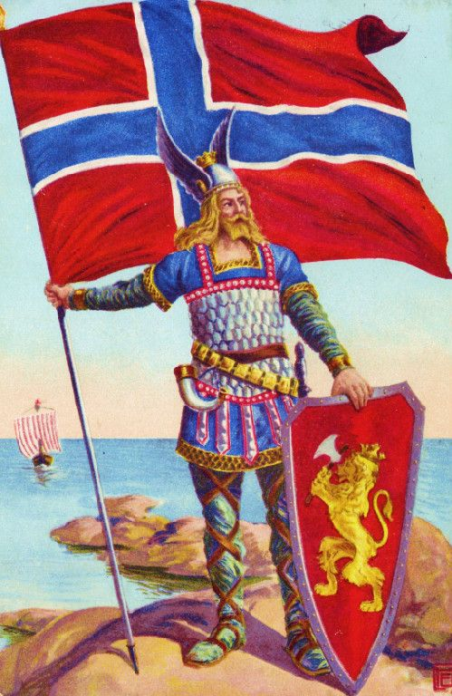
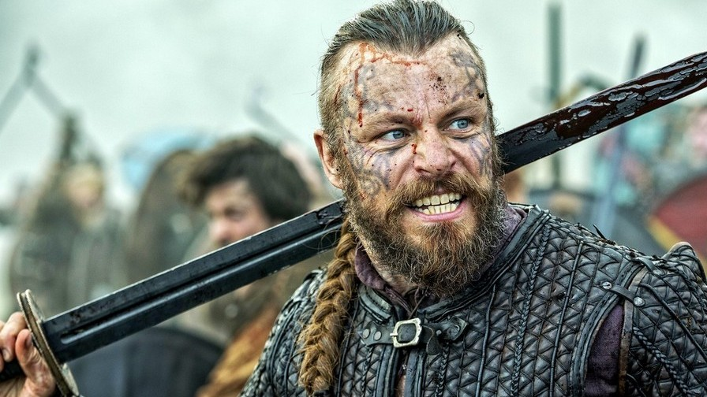

Епоха вікінгів
Епоха вікінгів
 Норвежці
Норвежці
У зв'язку з убогістю грунту, з жагою слави і збагачення, збільшувалася пристрасть до експедицій в чужі землі, так що вже в VIII столітті норвежці почали наводити жах на сусідні країни своїми набігами. Коли в кінці IX століття в Норвегії стали утворюватися великі держави, королі яких обмежували свободу окремих округів, число виїжджаючих в далекі плавання ще більш збільшилося. Іноді пускалися в похід, для завоювання або грабежу самі королі, бажаючи прославити своє ім'я. Почесними називалися тільки ті експедиції, які робилися під керівництвом князів, яких називали морськими королями. Розрізняються два періоди експедицій вікінгів: у першому норвежці плавають за море невеликими загонами, нападають лише на береги і острови і вертаються додому при настанні зими; у другому періоді вони збираються великими військами, заходять далеко від берега, залишаються на зиму в країні, яку грабують, опановують, будують там укріплення, поселяються в них. Цей період починається в деяких з відвідуваних вікінгами землях раніше, в інших пізніше - в Ірландії в 835 році, в гирлі Луари - близько того ж часу, в Англії і по гирла Сени - в 851 році.
Норвежці нападали навіть на територію нинішньої Туреччини, куди їх заманювали багатства Константинополя, званого ними Мюккльгордом. В кінці IX століття Норвегія згуртувалася в одне королівство, і, з тих пір є більш достовірні відомості про її долю. На західному березі Віка, теперішнього Хрістіансфьорда, перебувала невелика область Вестерфюльд, керована нащадками королів, які, за народними переказами, панували колись в Упсалі. Перший король Вестфольда, який залишив про себе пам'ять, був Хальвдан Чорний, який, почасти завдяки родинним зв'язкам, почасти шляхом завоювань, приєднав до свого королівства всі області у верхній частині затоки і які тягнулися всередину країни до озера Мьезен. Хальвдан рано помер, залишивши десятирічного сина, Гаральда (бл. 860). Останній продовжував розпочату батьком справу, підкоряючи своїй владі сусідніх ярлів і королів і встановлюючи в Норвегії єдиновладдя. Він досяг успіху, але горді родоначальники неохоче підкорялися королю, якому раніше були рівні; дуже багато знатних людей були вигнані Гаральдом за опір йому і попливли шукати собі нові землі. Пізніше всіх була підпорядкована область, що лежить на південь від Согнефьорда. Її вожді зібрали велике військо, але в жорстокій битві при Хафсфьорді переміг Гаральд (872). Харальд справив повний переворот в економічному і суспільному ладі країни. Маси незадоволених знищенням старих вольностей виїхали в Ісландію, на Шетландських, Гебридські і Оркнейські острови. Звідти вони часто робили набіги на береги Норвегії, але Гаральд переміг їх і поставив норвезьких ярлів на островах. Гаральд під кінець життя змінив принцип єдиновладдя: він розділив країну між своїми синами, кожному виділивши по королівству, а нащадкам жіночій лінії дав по графству разом з титулом ярла. Утворилося всього 16 королівств, зв'язок між якими Гаральд думав зберегти, оголосивши старшого свого сина Ейріка старшим королем. Гаральд був ще живий, коли Ейрік зробив спробу затвердити знову єдину монархію і отримав прізвисько Кривава Сокира за винищення братів. Його суворий, тиранічний характер сприяв пожвавленню реакції, збудженої суворим управлінням Харальда. У рік смерті останнього (934) в Норвегію повернувся з Англії його молодший син Хакон Добрий, народжений від рабині і відданий на виховання Етельстану Англійському. Хокона вибрали королем після того, як він урочисто обіцяв селянам відновити їх стародавні права і повернути їм родові землі. Ейрік змушений був втекти до Англії. Хакон Добрий виконав дані їм обіцянки. Хрещений при дворі Етельстана, Хакон зробив спробу оселити християнство і в Норвегії, але селяни різко відмовилися і наполегливо наполягали на тому, щоб король неухильно виконував язичницькі обряди, так що між ним і народом мало не стався розрив. Хакон загинув в битві біля Фітьяра, після якої влада перейшла до сина Ейріка Кривавої Сокири, Гаральду II, а потім потрапила в залежність від королів Данії.
Після Хакона цілий ряд королів, з яких найвідоміші - Олаф I Трюггвасон (995-1000) і Олаф II Товстий (1015-1028), намагалися ввести християнство, витримуючи наполегливу боротьбу з народом. Завдяки своїм особистим якостям, Олаф Трюггвасон став улюбленим героєм норвезької історії. Олаф II Товстий, прозваний за смерті Святим і вважається патроном Норвегії, був праправнуком Гаральда Прекрасноволосого. Він поєднав під своєю владою всю Норвегію, відбудував Нідарос, заснований Олафом Трюггвасоном і потім зруйнований, і зробив з нього столицю держави. Він був ревним християнином; віковий опір народу новій вірі був придушений. Затвердивши християнство, Олаф змінив закони країни відповідно до нових умов життя і склав церковні устрої.
Легендарні особи:
Гаральд І Прекрасноволосий
Легенда: син Хальвдана Чорного, конунга провінції Вестфольда. Його юність пройшла в нескінченних битвах з місцевими ярлами, апофеозом яких стала битва при Хафсфьорді (872 рік). Після перемоги Харальд оголосив себе королем об'єднаної Норвегії, згодом підпорядкував Оркнейські і Шетландськіє острова, воював зі шведами. Помер в 933 році (за іншими даними - в 940-м). Прізвисько з'явилося через шикарну шевелюру, якою Гаральд пишався.
Історія: небагато історичних фактів відомо про Гаральда. Існують лише два джерела, сучасники конунга — поеми скальдів Гаральдскведі (давньоскан. Haraldskvæði[en]) та Ґлюмдрапа (давньоскан. Glymdrápa), написані Торнбйорном Хорнкльовом. Хоча про життя Гаральда оповідають тільки саги, вчені визнають його реальною фігурою.
Епітафія: перший скандинавський конунг, якого можна порівняти з королями Західної Європи. Так, він організував повноцінну податкову систему, через що, до речі, незадоволені цим норвежці масово втікали в Ісландію.